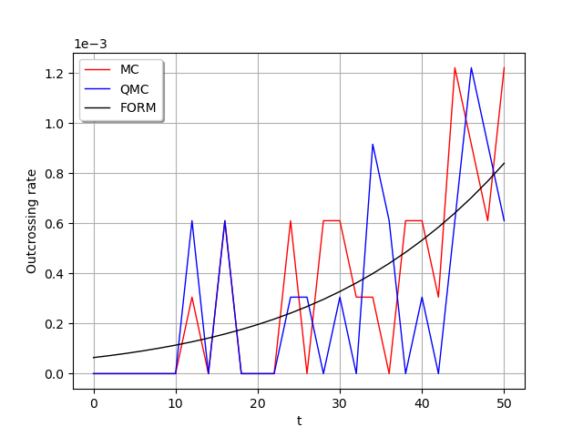

Note
Go to the end to download the full example code
Time variant system reliability problem¶
The objective is to evaluate the outcrossing rate from a safe to a failure domain in a time variant reliability problem.
We consider the following limit state function, defined as the difference between a degrading resistance  and a time-varying load
and a time-varying load  :
:
The failure domaine is defined by:

which means that the resistance at  is less than the stress at .
is less than the stress at .
We propose the following probabilistic model:
 is the initial resistance, and
is the initial resistance, and  ;
; is the deterioration rate of the resistance; it is deterministic;
is the deterioration rate of the resistance; it is deterministic; is the time-varying stress, which is modeled by a stationary Gaussian process of mean value
is the time-varying stress, which is modeled by a stationary Gaussian process of mean value  ,
standard deviation
,
standard deviation  and a squared exponential covariance model
and a squared exponential covariance model  .
.
The outcrossing rate from the safe to the failure domain at instant is defined by:
![\nu^+(t) = \lim_{\Delta t \rightarrow 0+} \dfrac{\mathbb{P}\{ g(t) \ge 0 \cap g(t+\Delta t) \leq 0\} }{\Delta t}]()
For each , we note the random variable  where
where  .
.
To evaluate  , we need to consider the bivariate random vector
, we need to consider the bivariate random vector  .
.
The event ![\{ g(t) \geq 0 \cap g(t+\Delta t) <0\}]() writes as the intersection of both events :
writes as the intersection of both events :
 and
and .
.
The objective is to evaluate:
![\mathbb{P}\{\mathcal{E}_t^1 \cap \mathcal{E}_t^2\} \quad \forall t \in [0,T]]()
1. Define some useful functions¶
We define the bivariate random vector ![Y_t = (bt + S_t, b(t+\Delta t) + S_{t+\Delta t})]() .
Here,
.
Here,  is a bivariate Normal random vector:
is a bivariate Normal random vector:
with mean
![[bt, b(t+\delta t)]]() and
andwith covariance matrix
 defined by:
defined by:
![\begin{align*}
\Sigma = \left(
\begin{array}{cc}
C(t, t) & C(t, t+\Delta t) \\
C(t, t+\Delta t) & C(t+\Delta t, t+\Delta t)
\end{array}
\right)
\end{align*}]()
This function buils  .
.
from math import sqrt
from openturns.viewer import View
import openturns as ot
def buildNormal(b, t, mu_S, covariance, delta_t=1e-5):
sigma = ot.CovarianceMatrix(2)
sigma[0, 0] = covariance(t, t)[0, 0]
sigma[0, 1] = covariance(t, t + delta_t)[0, 0]
sigma[1, 1] = covariance(t + delta_t, t + delta_t)[0, 0]
return ot.Normal([b * t + mu_S, b * (t + delta_t) + mu_S], sigma)
This function creates the trivariate random vector  where is independent from
where is independent from  .
We need to create this random vector because both events
.
We need to create this random vector because both events  and
and  must be defined from the same random vector!
must be defined from the same random vector!
def buildCrossing(b, t, mu_S, covariance, R, delta_t=1e-5):
normal = buildNormal(b, t, mu_S, covariance, delta_t)
return ot.BlockIndependentDistribution([R, normal])
This function evaluates the probability using the Monte Carlo sampling. It defines the intersection event  .
.
def getXEvent(b, t, mu_S, covariance, R, delta_t):
full = buildCrossing(b, t, mu_S, covariance, R, delta_t)
X = ot.RandomVector(full)
f1 = ot.SymbolicFunction(["R", "X1", "X2"], ["X1 - R"])
e1 = ot.ThresholdEvent(ot.CompositeRandomVector(f1, X), ot.Less(), 0.0)
f2 = ot.SymbolicFunction(["R", "X1", "X2"], ["X2 - R"])
e2 = ot.ThresholdEvent(ot.CompositeRandomVector(f2, X), ot.GreaterOrEqual(), 0.0)
event = ot.IntersectionEvent([e1, e2])
return X, event
def computeCrossingProbability_MonteCarlo(
b, t, mu_S, covariance, R, delta_t, n_block, n_iter, CoV
):
X, event = getXEvent(b, t, mu_S, covariance, R, delta_t)
algo = ot.ProbabilitySimulationAlgorithm(event, ot.MonteCarloExperiment())
algo.setBlockSize(n_block)
algo.setMaximumOuterSampling(n_iter)
algo.setMaximumCoefficientOfVariation(CoV)
algo.run()
return algo.getResult().getProbabilityEstimate() / delta_t
This function evaluates the probability using the Low Discrepancy sampling.
def computeCrossingProbability_QMC(
b, t, mu_S, covariance, R, delta_t, n_block, n_iter, CoV
):
X, event = getXEvent(b, t, mu_S, covariance, R, delta_t)
algo = ot.ProbabilitySimulationAlgorithm(
event,
ot.LowDiscrepancyExperiment(ot.SobolSequence(X.getDimension()), n_block, False),
)
algo.setBlockSize(n_block)
algo.setMaximumOuterSampling(n_iter)
algo.setMaximumCoefficientOfVariation(CoV)
algo.run()
return algo.getResult().getProbabilityEstimate() / delta_t
This function evaluates the probability using the FORM algorithm for event systems..
def computeCrossingProbability_FORM(b, t, mu_S, covariance, R, delta_t):
X, event = getXEvent(b, t, mu_S, covariance, R, delta_t)
algo = ot.SystemFORM(ot.SQP(), event, X.getMean())
algo.run()
return algo.getResult().getEventProbability() / delta_t
2. Evaluate the probability¶
First, fix some parameters: ![(\mu_R, \sigma_R, \mu_S, \sigma_S, \Delta t, T, b)]() and the covariance model which is the Squared Exponential model.
Be careful to the parameter
and the covariance model which is the Squared Exponential model.
Be careful to the parameter  which is of great importance: if it is too small, the simulation methods have problems to converge
because the correlation rate is too high between the instants and
which is of great importance: if it is too small, the simulation methods have problems to converge
because the correlation rate is too high between the instants and  .
We advice to take
.
We advice to take  .
.
mu_S = 3.0
sigma_S = 0.5
ll = 10
b = 0.01
mu_R = 5.0
sigma_R = 0.3
R = ot.Normal(mu_R, sigma_R)
covariance = ot.SquaredExponential([ll / sqrt(2)], [sigma_S])
t0 = 0.0
t1 = 50.0
N = 26
# Get all the time steps t
times = ot.RegularGrid(t0, (t1 - t0) / (N - 1.0), N).getVertices()
delta_t = 1e-1
Use all the methods previously described:
Monte Carlo: values in values_MC
Low discrepancy suites: values in values_QMC
FORM: values in values_FORM
values_MC = list()
values_QMC = list()
values_FORM = list()
for tick in times:
values_MC.append(
computeCrossingProbability_MonteCarlo(
b, tick[0], mu_S, covariance, R, delta_t, 2 ** 12, 2 ** 3, 1e-2
)
)
values_QMC.append(
computeCrossingProbability_QMC(
b, tick[0], mu_S, covariance, R, delta_t, 2 ** 12, 2 ** 3, 1e-2
)
)
values_FORM.append(
computeCrossingProbability_FORM(b, tick[0], mu_S, covariance, R, delta_t)
)
print("Values MC = ", values_MC)
print("Values QMC = ", values_QMC)
print("Values FORM = ", values_FORM)
Values MC = [0.0, 0.0, 0.0, 0.0, 0.0, 0.0, 0.00030517578125, 0.0, 0.0006103515625, 0.0, 0.0, 0.0, 0.0006103515625, 0.0, 0.0006103515625, 0.0006103515625, 0.00030517578125, 0.00030517578125, 0.0, 0.0006103515625, 0.0006103515625, 0.00030517578125, 0.001220703125, 0.00091552734375, 0.0006103515625, 0.001220703125]
Values QMC = [0.0, 0.0, 0.0, 0.0, 0.0, 0.0, 0.0006103515625, 0.0, 0.0006103515625, 0.0, 0.0, 0.0, 0.00030517578125, 0.00030517578125, 0.0, 0.00030517578125, 0.0, 0.00091552734375, 0.0006103515625, 0.0, 0.00030517578125, 0.0, 0.0006103515625, 0.001220703125, 0.00091552734375, 0.0006103515625]
Values FORM = [6.407247221976507e-05, 7.202731340749856e-05, 8.087457586090277e-05, 9.070184981054664e-05, 0.00010160352566970394, 0.00011368175073412876, 0.0001270463113912958, 0.00014181491000870818, 0.00015811435561607578, 0.00017607979215241996, 0.00019585595886454746, 0.0002175971126689752, 0.0002414674407523497, 0.0002676410518535999, 0.0002963031343688264, 0.0003276489835870634, 0.00036188514225255717, 0.00039922842206094566, 0.0004399070455775222, 0.000484160922259269, 0.0005322401306923784, 0.0005844062178174964, 0.0006409303353549688, 0.000702094564935671, 0.0007681919118323028, 0.0008395236033398269]
Draw the graphs!
g = ot.Graph()
g.setAxes(True)
g.setGrid(True)
c = ot.Curve(times, [[p] for p in values_MC])
g.add(c)
c = ot.Curve(times, [[p] for p in values_QMC])
g.add(c)
c = ot.Curve(times, [[p] for p in values_FORM])
g.add(c)
g.setLegends(["MC", "QMC", "FORM"])
g.setColors(["red", "blue", "black"])
g.setLegendPosition("topleft")
g.setXTitle("t")
g.setYTitle("Outcrossing rate")
view = View(g)
view.ShowAll()
